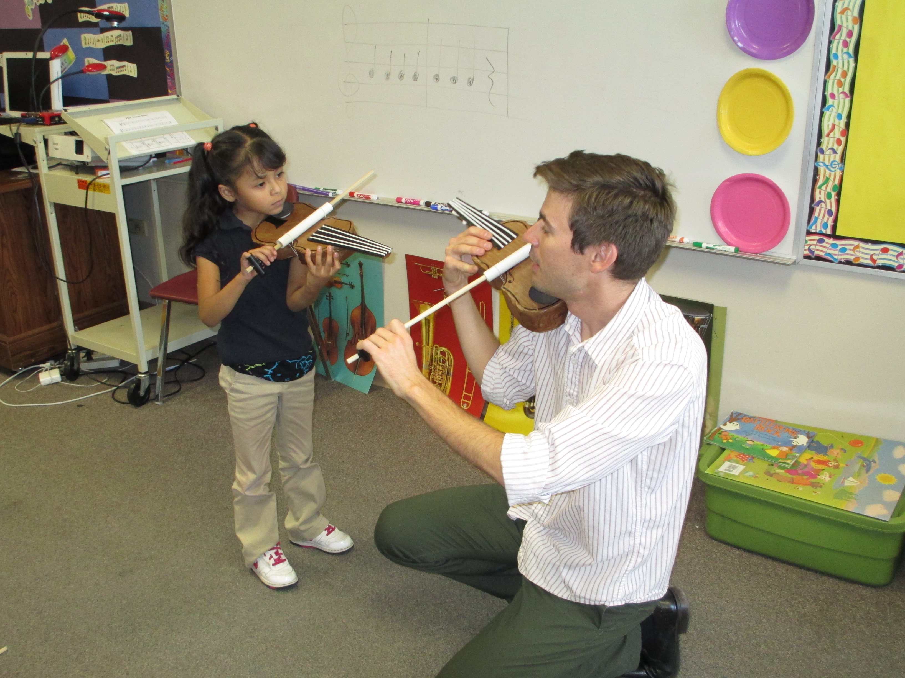
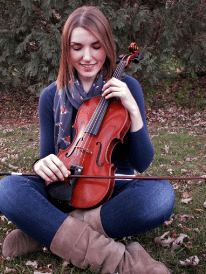

El Sistema Colorado at Swansea Elementary School
Alex Vittal - Lead Teaching Artist
Alex Vittal balances a busy schedule as music educator, viola performer, and composer/arranger of music. As an educator, Mr. Vittal works primarily with kindergarten students for El Sistema Colorado, teaches viola, violin, and music theory both privately and for Dana V. Music, a studio in Louisville, serves as Viola Section Mentor for the Greater Boulder Youth Orchestra and works with the viola section, chamber orchestra, and honors string quartet at Fairview High School in Boulder.
Mr. Vittal can be seen performing on the viola regularly with Colorado's premiere string chamber orchestra Sphere Ensemble, the Steamboat Symphony Orchestra, Emerald City Opera, Argentine tango ensemble Orquesta Tìpica Natural Tango and, as a sub, with the Boulder Philharmonic Orchestra and Boulder Chamber Orchestra. Mr. Vittal also made his conducting debut in the summer of 2013 performing the regional premiere of Lippa and Crawley's musical, A Little Princess.
As an arranger of music, Mr. Vittal has contributed repertoire to the Phoenix-based Tetra String Quartet (available on iTunes), Denver-based Argentine tango ensembles Extasis and Orquesta Tìpica Natural Tango, Sphere Ensemble, as well as other arrangements for various ensembles, including several works for viola and classical guitar.
Mr. Vittal earned his Bachelor of Music in Viola Performance from Arizona State University and his Master of Music in Viola Performance and Pedagogy from the University of Colorado–Boulder.
Laura Eakman - Teaching Artist
An avid freelance musician, Laura regularly performs with regional chamber ensembles and has served as assistant principal violist in the Northbrook Symphony Orchestra, Kishwaukee Symphony Orchestra, and the annual Lasalle Bank Messiah held at Chicago’s Civic Opera House.
Her pedagogy training has included Suzuki certification with Ann Montzka-Smelser as well as classes and workshops with Mimi Zweig of Indiana University and Rebecca Henri of Peabody Conservatory.
In addition to her thriving private studio of young musicians in the Chicago area, Laura was the primary violin and viola instructor at Bloomingdale School of Music, Schaumburg Park District and Lake County Music. She taught private lessons and coached chamber music at Conant High School and Hoffman Estates High School.
Laura received her Bachelor and Master of Music degree at Northern Illinois University where she studied music performance and pedagogy. At NIU, her primary viola teachers included Richard Young of the Vermeer quartet and Tony Devroye of the Avalon String Quartet, also studying violin with Mathias Tacke of the Vermeer Quartet. Additionally, she participated in graduate studies at Chicago’s College of Performing Arts where she received instruction from Roger Chase as well as Robert Chen and other members of the Chicago Symphony Orchestra. She is now pursuing a Doctor of Musical Arts at the University of Colorado.
UPCOMING EVENTS
- First Day of Afterschool: Sept. 14
- Paper Violin Making: Sept. 2 and Sept. 9
- Open Enrollment Closes: Sept. 24
- Nucleo Concert: Dec. 5
- Swansea Fall Concert: Dec. 15